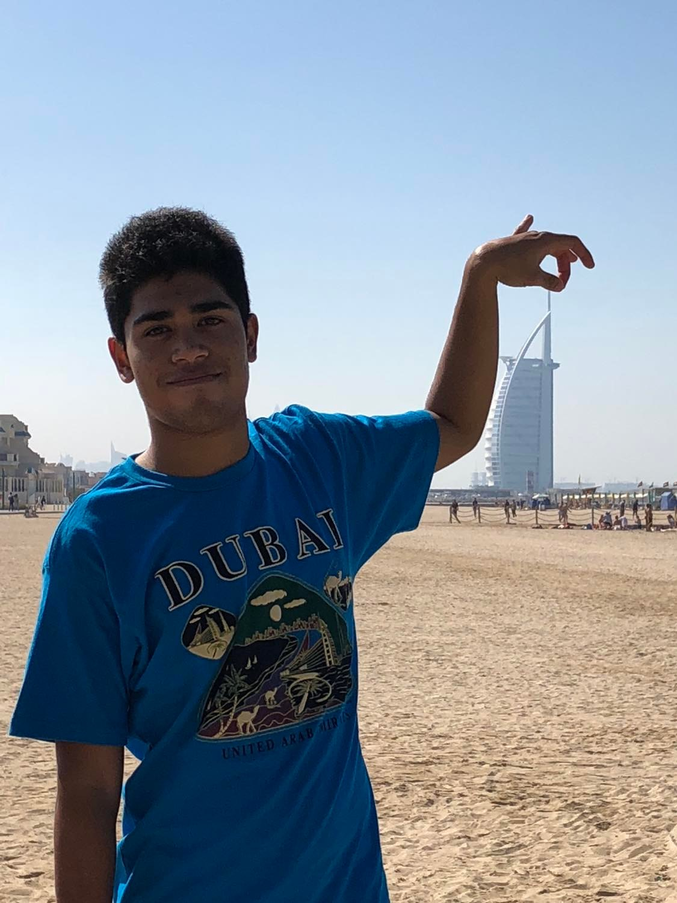

My Travel
Burj Khalifa, Dubai
One of the most popular attractions in Dubai. It is the tallest building in the world and a testament
to the architectural prowess, willpower, and scientific capability of mankind. I am privileged
to be one of the millions of people from around the world to witness the magnanimity and grandeur of Burj Khalifa.
Grand Palace, Bangkok, Thailand
Another interesting place we saw while visiting Thailand was the Grand Palace.
We enjoyed going around the palace despite the scorching heat of summer.
The Grand Palace is a complex of buildings at the heart of Bangkok, Thailand.
The palace has been the official residence of the Kings of Siam since 1782.
The king, his court, and his royal government were based on the grounds of the palace until 1925
Kuala Lumpur, Malaysia
I visited Kuala Lumpur, Malaysia in November 2015 with my mother and grandparents.
One of most iconic places I have seen was the Petronas Towers.
The Petronas Towers, also known as the Petronas Twin Towers and the KLCC Twin Towers,
are 88-storey supertall skyscrapers in Kuala Lumpur, Malaysia. At 451.9 meters,
they are the world's tallest twin skyscrapers. Between 1998 and 2004, they were the tallest buildings in the world.
Future Museum of Dubai
The Museum of the Future is an exhibition space for innovative and futuristic ideologies,
services, and products. Located in the Financial District of Dubai, UAE,
the Museum of the Future has three main elements: green hill, building, and void.
Founded by the Dubai Future Foundation. I see this iconic building everyday as our apartment is
right in front of it however I haven’t had the opportunity to enter the museum , maybe one of these days.
Hong Kong, Disneyland
We stopped over Hongkong on our way back to Philippines from Dubai on May 2015.
I had a magical moment at Hong Kong Disneyland,it is a theme park located on reclaimed land
in Penny's Bay, Lantau Island.It is located inside the Hong Kong Disneyland Resort.
Rocket Mortgage Fieldhouse, Cleveland, Ohio
Being an avid fan of Lebron James, it was a fulfilling experience to watch one of his games at rocket mortgage Fieldhouse,
it is a multi-purpose arena in Cleveland, Ohio. The building is the home of the Cleveland Cavaliers
of the National Basketball Association and the Cleveland Monsters of the American Hockey League.
This is one of my most unforgettable experiences. I still remember the lively cheers and sound while watching the game.
While in Cleveland , I also had the opportunity fulfill one of my dreams being a passionate about music,
to see The Rock and Roll Hall of Fame, sometimes simply referred to as the Rock Hall, is a museum and hall of fame
located in downtown Cleveland, Ohio, United States, on the shore of Lake Erie.
Phuket, Thailand

I visited Phuket , Thailand in May 2017 with my mother and sister. I had the experience of bravely
throwing myself in the middle of the sea. I enjoyed the beaches and islands we saw such as Koh Samui,
Thailand’s second largest island, lies in the Gulf of Thailand. It's known for its palm-fringed beaches,
coconut groves and dense, mountainous rainforest, plus luxury resorts and posh spas and Krabi,
located at southern Thailand’s west coast, characterized by craggy, sheer limestone cliffs, dense mangrove forests,
and more than a hundred offshore islands. We saw one of its most popular beach destinations Phi Phi Islands,
which jut from the sea like giant rainforest boulders.
Niagara Falls, Canada
Niagara Falls, Ontario, is a Canadian city at the famous waterfalls of the same name,
linked with the U.S. by the Rainbow Bridge. Its site on the Niagara River's western shore overlooks
the Horseshoe Falls, the cascades' most expansive section. Elevators take visitors to a lower,
wetter vantage point behind the falls. A cliffside park features a promenade alongside
520-ft.-high Skylon Tower with an observation deck. I have fond memories at Niagara Falls ,
apart from gazing the most mesmerizing falls ,we also went to around the city and played games at the Casino.
Ruins of Saint Paul’s, Macau
The Ruins of Saint Paul's are the ruins of a 17th-century Catholic religious complex
in Santo António, Macau, China. They include what was originally St. Paul's College
and the Church of St. Paul also known as "Mater Dei", a 17th-century Portuguese church dedicated
to Saint Paul the Apostle. Today, the ruins are one of Macau's best-known landmarks
and one of the Seven Wonders of Portuguese Origin in the World. In 2005, they were officially
listed as part of the Historic Centre of Macau, a UNESCO World Heritage Site.
Expo 2020, Dubai
Expo 2020 was a World Expo hosted by Dubai, in the United Arab Emirates, from 1 October 2021 to 31 March 2022.
Originally scheduled for 20 October 2020 to 10 April 2021, it was postponed due to the COVID-19 pandemic
in the United Arab Emirates. I was lucky that I am in Dubai during the Expo 2020. My mother bought be an multi-pass
so I could go how much I wanted , I managed to visit the expo site 4 times and enjoyed collecting stamps to every pavilion
I saw. The most fascinating was the UAE pavilion and other favorite ones were Egypt, Uzbekistan, Thailand, Switzerland
and our own very Philippines pavilion.
Miracle Garden, Dubai
I have fond memories visiting the Miracle Garden with my mother and sister.
The Dubai Miracle Garden is a flower garden located in the district of Dubai land, Dubai,
United Arab Emirates. The garden was launched on Valentine's Day in 2013. It occupies over 72,000 square meters,
making it the world's largest natural flower garden, featuring over 50 million flowers and 250 million plants.
Burj Al Arab, Dubai

Dubai's most iconic hotel and a global icon of Arabian luxury however I didn’t get the chance to go
inside the hotel, I could only see from the Jumeirah beach where I took the picture.
Ancient City, Bangkok, Thailand
I visited Thailand in 2013 with my mother, sister and grandparents. This is the first Christmas
we celebrated Christmas together outside Philippines and Dubai and we have so much fun going around
the city. One of the most interesting places we saw the Ancient Siam which a museum park constructed
by Lek Viriyaphant and occupying over 200 acres in the shape of Thailand. Ancient Siam is dubbed as
the world's largest outdoor museum.